Everything you need to use the Tasks app on your phone and your computer: getting started, capturing, organising and getting things done.
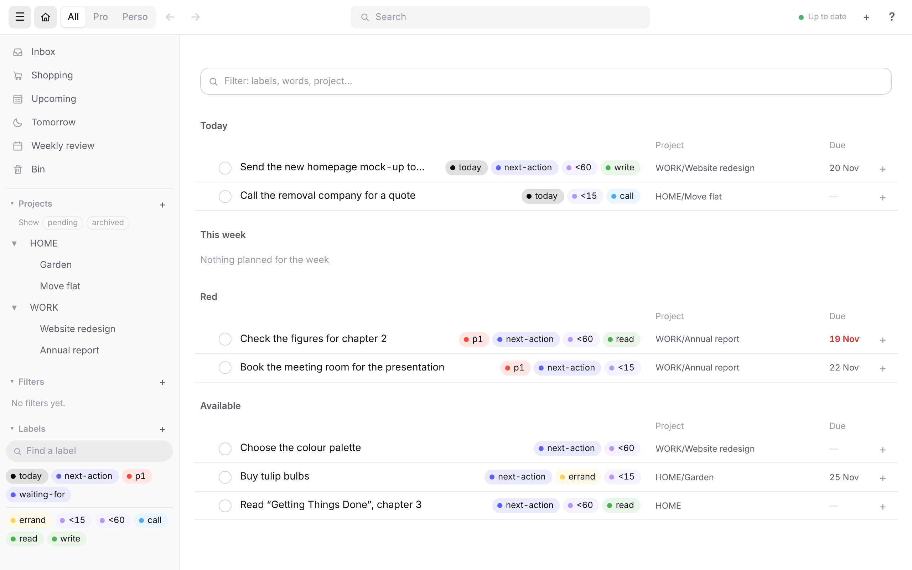
You need: the address of the app, your username and a temporary password, given to you by Lou, who runs the server. Nothing else to install.
https://pc-lou.tailc45f62.ts.net. If you turned on two-factor authentication, enter the 6-digit code from your authenticator app when asked. A device stays signed in as long as you open the app on it at least once a year.https://pc-lou.tailc45f62.ts.net (the server's own pages), sign in, then Settings. Turning on two-factor authentication there is recommended.Opened the link from WhatsApp, an e-mail or a message? It may open inside that app, which cannot install anything: choose "Open in Chrome" / "Open in browser" first. Once signed in, the app works the same in every browser. Install it on as many devices as you like: they all show the same tasks.
| Device | Browser | Install as an app | How |
|---|---|---|---|
| Windows PC | Chrome, Edge, Brave | Yes | Install icon at the right of the address bar (or menu → Install Tasks). |
| Firefox | In a tab | Works fully in a tab; pin the tab or bookmark it. | |
| Mac | Chrome, Edge, Brave | Yes | Install icon at the right of the address bar. |
| Safari (macOS 14 Sonoma or later) | Yes | File → Add to Dock. | |
| Firefox | In a tab | Works fully in a tab. | |
| Android phone or tablet | Chrome, Brave | Yes, the most complete | Menu ⋮ → Install (or "Add to Home screen"). Also gives the long-press New task shortcut and Share → Tasks (section 4). |
| Firefox, Edge, Samsung Internet | Yes | Menu → Install or "Add to Home screen". Everything works, except the long-press shortcut and Share → Tasks. | |
| iPhone / iPad | Safari (also Chrome or Edge on iOS 16.4 or later) | Yes | Share button → Add to Home Screen. No long-press shortcut and no Share → Tasks on iPhone. |
The app follows a simple method (known as "Getting Things Done"): empty your head into one place, decide later what each thing is, then work from short lists of things you can actually do now.
| Word | Meaning |
|---|---|
| Inbox | Everything not yet defined. A task stays there until you validate it, however much you change it. |
| Project | Where a task belongs ("Move flat", "Annual report"). Projects can contain sub-projects. |
| Label | A coloured tag on a task. A few have a special meaning (below); you can create any others you like (call read <15 for "less than 15 minutes"…). |
| Pro / Perso | An optional context on your top-level projects (work / personal), to see only one side of your life. |
| Label | Means | Shown in |
|---|---|---|
| today | You chose to do it today | Home → Today |
| next-action | The next thing to do in its project | Home → Available |
| p1 | Top priority | Home → Red |
| overdue | Due date passed (set automatically) | Home → Red |
| last-day | Due today (set automatically) | Home → Red |
| waiting-for | You are waiting for someone else | Weekly review |
overdue and last-day are added and removed for you when the automations are on (section 13). Create p1 and waiting-for yourself the first time you need them.
Three places, three roles: the top bar holds what works everywhere, the menu (☰) every place you can go, and ? everything about the app itself.
| Where | What |
|---|---|
| Top left: ☰ | Shows or hides the menu. |
| Top left: house, All Pro Perso, ← → | Home page; what the home page and the menu show (click All, Pro or Perso, section 7); back and forward. |
| Top middle: Search | Finds any task, in every view. |
| Top right: dot | Sync status: green "Up to date", or changes waiting to be sent. Click it for the details (Status). |
| Top right: ↶ ↷ and + | Undo, redo (when there is something to undo); New task. |
| Top right: ? | The Help centre: Help, Updates, Status, Settings (section 15). A dot on it: blue, updates you have not seen; orange or red, something to look at in Status. |
| The menu, top | The pages: Inbox, Shopping, Upcoming, Tomorrow, Weekly review, Bin. |
| The menu, then | Projects, Filters and Labels, each with its + to create one. Click a heading to fold or unfold it (remembered on each device). |
| A page | Its title and its own buttons at the top (for a project: + a new task, ⋯ order, completed and pending tasks, Mark pending, Archive), then its tasks. |
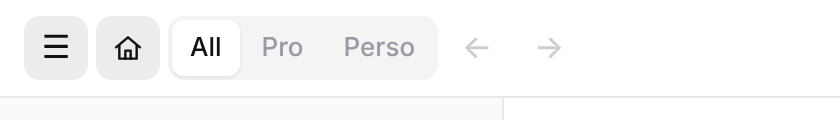
Capture first, think later. A task needs only a title to start with; it goes to the Inbox.
| Where | How |
|---|---|
| Computer | Press n, or the + at the top right. Type, Enter: it goes to the Inbox. If you want, fill in the rest first in the same window: project (then it skips the Inbox), section, start, due, Remind, Repeat, labels, notes; or the cart for a shopping item. Ctrl/⌘+Enter adds it and keeps the window open for the next one. |
| Computer, from anywhere | A key combination that opens a small New task box even when the app is closed (set it up once, see below). |
| Phone | The round + button at the bottom right: the same window. |
| Phone, from the home screen | Only if the app was installed with Chrome or Brave on Android: long-press the Tasks icon → New task, or drag that "New task" item onto your home screen for a one-tap button. Not available with Firefox or on an iPhone: use the round + instead. |
| From another app | Same condition (Android, installed with Chrome or Brave). In another app, for example on a web page, an e-mail or a message, tap Share and choose Tasks in the list of apps: the New task box opens with the page title or the text as the task's title and the link in its notes. Check it and tap Add. |
| Inside a project | At the bottom of a project's list (or of one of its sections): Add a task to this project… The task is created in that project and validated at once, without going through the Inbox. |
| Something to buy | Tick the cart in the New task box before Enter: it goes straight to the Shopping list, not to the Inbox (section 9). |
The app starts every task title with a capital letter (not when it starts with a web address or a word like "iPhone").
Windows (Chrome or Edge): right-click the desktop → New → Shortcut. As location, paste"C:\Program Files\Google\Chrome\Application\chrome.exe" --app=https://pc-lou.tailc45f62.ts.net:8443/quick-add --window-size=680,320
(for Edge: "C:\Program Files (x86)\Microsoft\Edge\Application\msedge.exe" instead of Chrome). Name it "New task". Then right-click it → Properties → click in Shortcut key and press Ctrl+Alt+T → OK.
Mac: open the Shortcuts app → + → add the action Open URLs with https://pc-lou.tailc45f62.ts.net:8443/quick-add. Name it "New task", then in its details (ⓘ) choose Add Keyboard Shortcut and press, for example, ⌥⇧⌘T.
The first time, sign in in the window that opens. Then the key opens a one-line box: type, Enter, and the task is in your Inbox.
Inbox is the first page of the menu (or press g then i). Every new task waits here until you validate it.
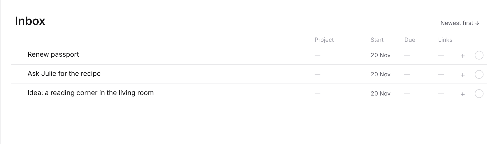
What to do now, in four short lists, with a filter box at the top to find anything else.
| Block | Shows |
|---|---|
| Today | Tasks labelled today. |
| This week | The week's list: tasks labelled week (starred in the Weekly review's Plan the week), unless already in Today. |
| Red | Urgent: p1, overdue, last-day. |
| Available | Your next actions: next-action, plus every open task of a project whose name starts with Single tasks (for example "Single tasks Pro" and "Single tasks Perso"), unless it is waiting-for. |
Complete a task with its circle on the left (or x). On a computer, open it with the + at the right end of its row (clicking the title renames it); on a phone, tap it.
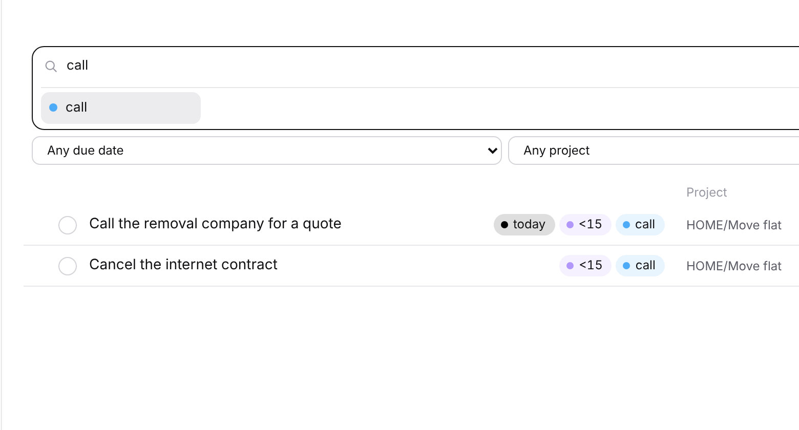
The menu (☰) holds your projects and sub-projects, in your own order, under Projects. Click one to open its page. Show pending and archived, under the heading, also list those.
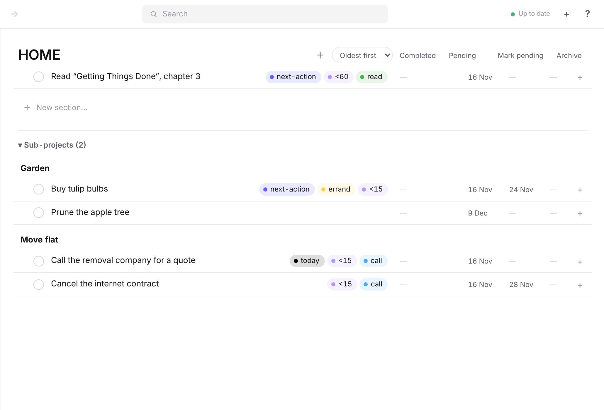
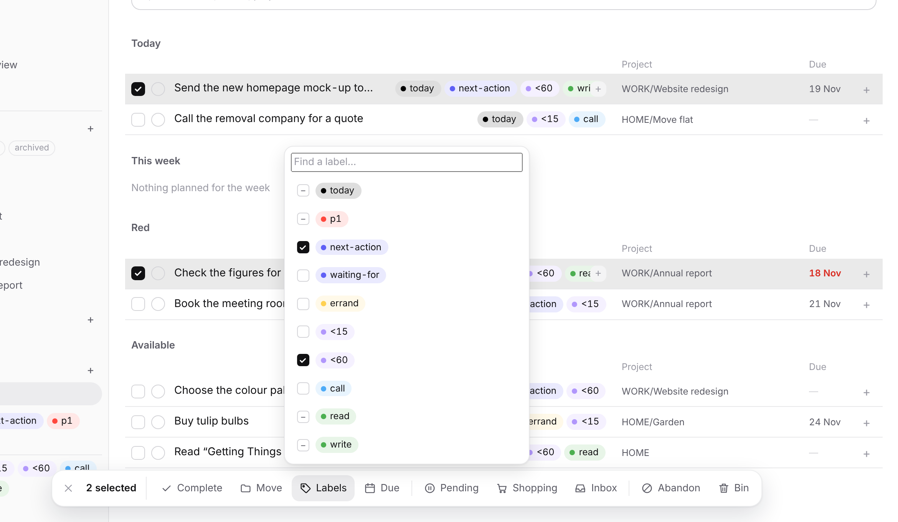
From top to bottom: the title, two switches, its details one per line, the notes, then Duplicate and Delete. Changes are saved as you go.
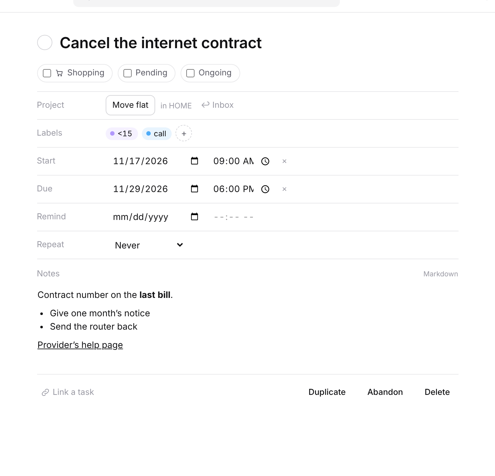
| Part | What for |
|---|---|
| Circle, title | Complete it; click the title to edit it (long titles use as many lines as needed; its labels stay in view, + adds one). |
| Shopping switch | On: it is on the Shopping list (and leaves the Inbox if it was there). In the New task box, the cart (a grey icon shaped like Add; filled once ticked) with a title typed adds it to the Shopping list at once. Giving a task in the Inbox the shopping label does the same. |
| Pending switch | On: the task is on hold (waiting for something, not now). It then shows nowhere, whatever its labels or dates: not on the home page, Tomorrow, Upcoming, the filters, the labels' pages, nor in the Weekly review except in "Pending tasks". On its project's page, Pending (⋯ on the phone) shows it, greyed out at the end. Switch it off to resume it. Ctrl/⌘+Z undoes it. |
| Ongoing switch | On: the task is in progress. It gets its own block, first on the home page, and comes first among the tasks to consider in Tomorrow and the Weekly review; in lists it is marked ongoing. Putting it on hold (Pending) switches it off. |
| Project | Where it belongs, with the project above it ("in HOME"). ↩ Inbox sends it back to be defined again. |
| Section | Only when its project has sections. |
| Labels | Click a label to remove it; + to add one (type to find one, or create it). |
| Start, Due | When it becomes relevant; its deadline. Choosing the day is enough (the time is optional: 09:00 for a start, the end of the day for a deadline); × removes the date. What you choose is kept even if you then click elsewhere, here and in a task's date window in the lists. Past due: in red, "Overdue", and labelled overdue by the automations. |
| Remind | A day and a time: your phone gets a notification then ("Tasks: reminder"; tap it to open the task). It needs your ntfy topic (Settings › Alerts) and the PC on; the text never contains the task. × removes it. |
| Repeat | Every week (choose the day and time), every month or every year. Completing a repeating task moves it to its next date instead of closing it. |
| Notes | Anything, in Markdown (point at "Markdown" for a reminder): **bold**, *italic*, lines starting with - for a list, # for a title, [text](https://…) for a link. Shown formatted; click the text to edit it (a click on a link opens it, in a new tab). |
| 🔗 Link a task | Chain tasks in order: Precedes / Follows, then type to pick the other task. Linked tasks are then listed above. With the automations on, completing a task gives next-action to the one that follows. |
| Duplicate, Abandon, Delete | Duplicate makes a copy and opens it. Abandon: it was not done and should not be done any more; it goes to the Bin (marked "Abandoned", kept 30 days), never counts as done (figures, Today's summary), and a repeating task stops repeating. Restore in the Bin brings it back as a task to do. Delete moves it to the Bin and takes you back to the page you came from. |
A task still to validate shows a "Validate definition" bar under its title (v). Esc goes back.
Tick the cart when you add a task (or on its page) for anything to buy. It gets the shopping label, skips the Inbox (it goes to a Shopping project unless it already has a project) and stays out of the home page blocks. 🛒 Shopping in the menu (or g p) opens the list, grouped by shop: give an item a shop's label (biocoop, decathlon…) to file it under that shop. Tap the circle to tick an item off; ticked items stay at the bottom for a day, to undo a wrong tap.
The search box at the top (or /, Ctrl/⌘+K) finds any task by its title, in every view, and remembers your recent searches.
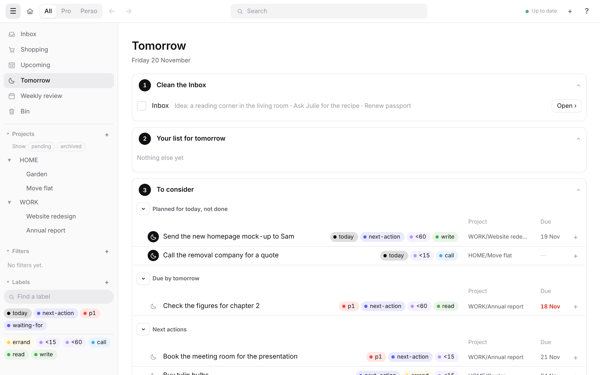
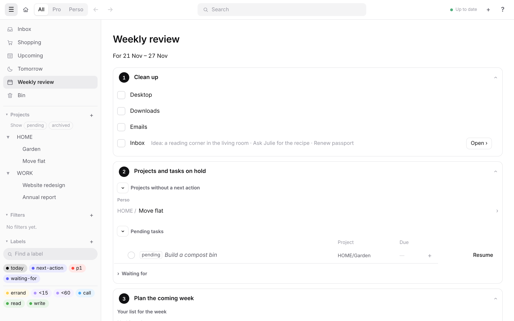
Only what is ahead: no figures, nothing already done. In place of a task's circle, the moon (as for Tomorrow in the menu) puts it on tomorrow's list (the today label); filled, it is on the list, and a click takes it off.
Never shown: tasks in the Inbox, on hold, shopping items, tasks waiting for someone, tasks that start after tomorrow, and the projects your saved filter "Tomorrow" leaves out. What was planned each day is remembered in your account, on all your devices.
Three steps, only what is ahead. Click the number of step 1 or 2 to tick it for the week (on all your devices).
In place of the circle of every task of step 3: the calendar (as for Weekly review in the menu) puts it on the week's list (the week label: the home page's This week block, and on Upcoming the tasks with no day yet); the moon puts it on tomorrow's list, so on Sundays you plan Monday here too. Filled means chosen; a click takes it off. On the phone they sit one above the other.
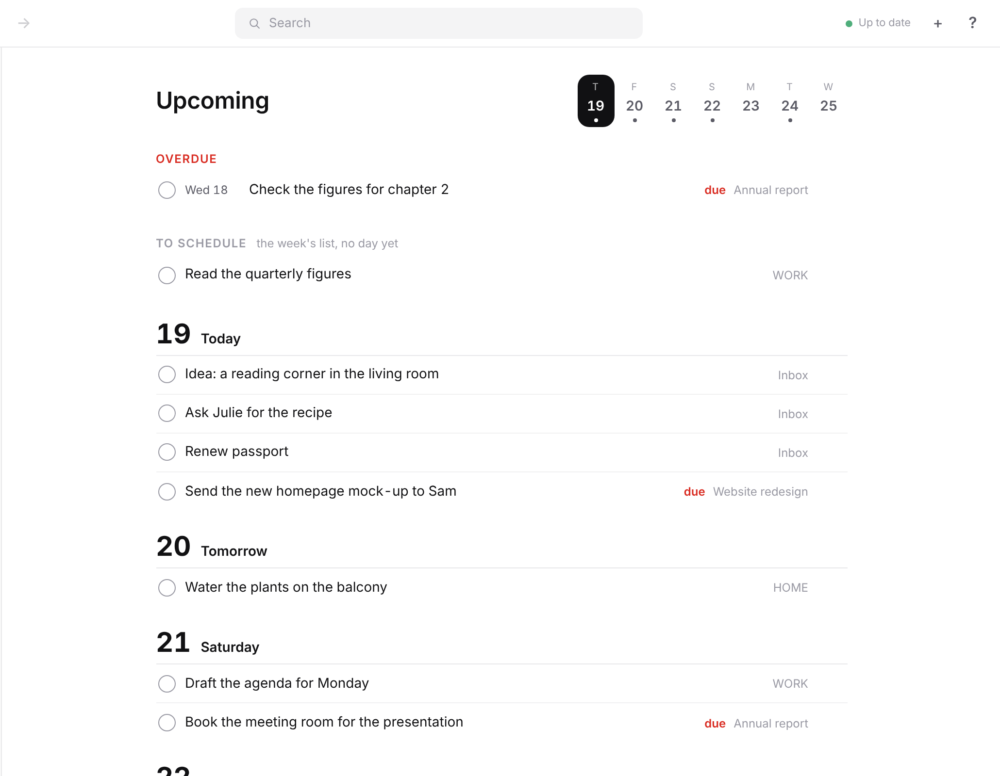
Deleted and abandoned tasks wait 30 days in the Bin (in the menu, under Weekly review, or g b), each with the days left, then disappear for good. Restore puts a task back in the Inbox. Right after deleting, an Undo button also appears for a few seconds.
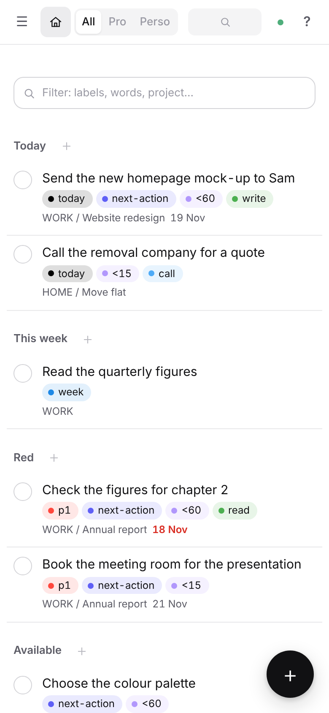
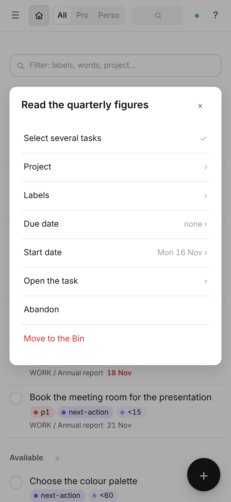
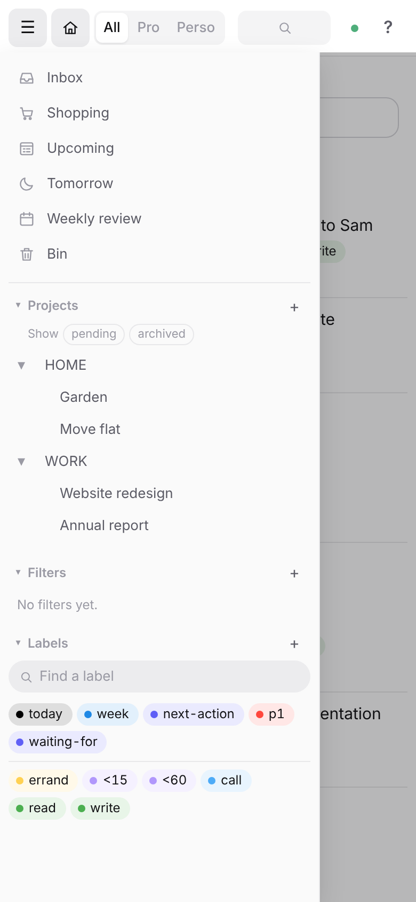
Small jobs the server does for you every minute. They are on from the start: nothing to do. To stop them: Help (?) → Automations → Turn off (and Turn on to start them again).
| Automation | What it does |
|---|---|
| Next-action chain | When you complete a task, the task that follows it (relation "precedes / follows") gets next-action once all the tasks before it are done. |
| Clean-up | A completed task loses next-action, today, overdue and last-day. |
| Overdue / last-day | overdue when the due date has passed, last-day on the day itself, so they show in Red. |
| Start date | A task created without a start date gets one. |
| Pending projects | Tasks of a pending project stay out of sight until their start date; then the project comes back by itself. |
| Duplicate labels | Two labels with the same name are merged, once a day. |
They work only on your own account, with their own copy of the four labels (created for you if missing). The app gives the server a key that only lets it do these jobs on your account; turning them off deletes that key, and they stay off until you turn them on again.
The server is a computer at Lou's. If it is off or offline, the app keeps working on your devices and your changes wait; you simply won't see changes made on your other devices until it is back.
The ? button at the top right (or the ? key): everything about the app itself, in four tabs. The red or orange bar under the top bar, and the sync dot, open it on Status.
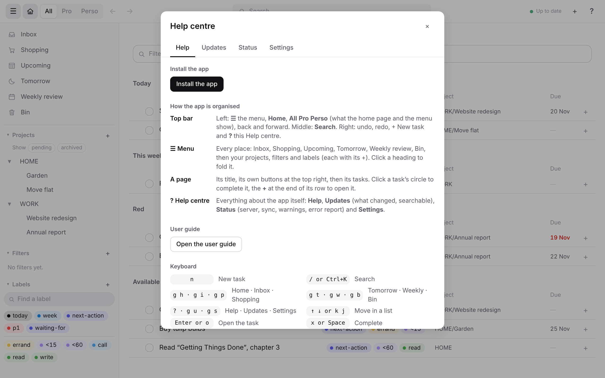
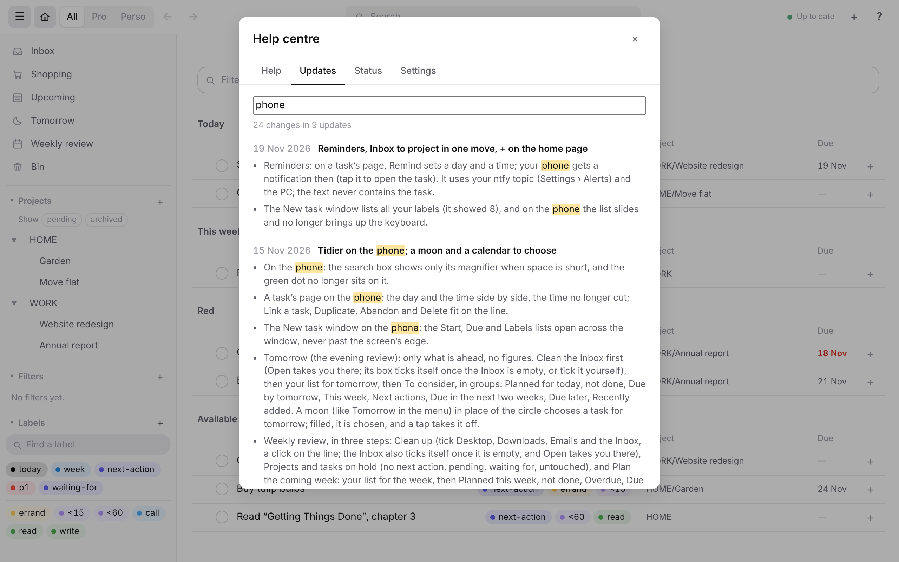
| Tab | What is in it |
|---|---|
| Help | Install the app (until it is installed on this device: installs it, or shows the steps for your browser); how the app is organised; Open the user guide (this guide, on any device); the keyboard shortcuts (computer), or how to put "New task" on your home screen (phone). |
| Updates | Every update of the app, newest first; those you have not seen yet are marked New. Type in the box to keep only the changes that mention every word typed (capitals and accents ignored); the words are highlighted. g u opens it. |
| Status | Is the server online; last sync and changes waiting; the server's health and your own devices' (any problem is explained, with what to do). Got it hides a warning for you, on all your devices; it comes back if the situation changes. Lou, who runs the server, sees the same warnings and is warned too. Run a health check. Error report (30 days): if something goes wrong, one click gathers what happened; send it to Lou. |
| Settings | Alerts: optional, an ntfy topic (free app ntfy) to get a short notification on your phone if a device cannot sync for 15 minutes or gets signed out, and for the reminders you set on tasks; the text never contains your tasks; Save, then Test. Automations: on by default, turn them off or on again (section 13). My data: download a copy (next page). Appearance (on each device): Light, Black (a black page with white text and dot-matrix titles, in the spirit of Nothing phones) or Like the device (light by day, black when the phone or computer is set to dark), and Labels in shades of grey (no colours). With Black, the app's icon is black too: remove the app from the home screen and add it again to get it. Label colours: the order of the colours labels are sorted by. Maintenance: merge duplicate labels or projects; "Fresh start" is a radical reset you should not need. Account: Sign out (changes not yet sent are kept and sent after you sign in again), and the app's version. g s opens it. |
? → Settings → My data:
The copy is made from what your device holds, so it works even when the server is off, and it contains only your account. If your last copy is more than a month old, the app reminds you (at most once a week).
On a computer. They are also in the Help centre (?), Help tab.
| Key | Does |
|---|---|
| n | New task |
| / or Ctrl/⌘+K | Search |
| ↑ ↓ or k j | Move in a list |
| Enter or o | Open the task |
| x or Space | Complete |
| v | Validate (Inbox) |
| r | Rename |
| l | Labels |
| m | Move to another project |
| Ctrl/⌘+click · Shift+click · Ctrl/⌘+A | Select several tasks · a range · all (while selecting) |
| Key | Does |
|---|---|
| 1 · 2 | Set Pro · Perso (Inbox) |
| i | Back to the Inbox |
| Backspace | Move to the Bin |
| Ctrl/⌘+Z · +Shift | Undo · Redo |
| Esc | Close, or go back |
| g h | Home |
| g i · g p | Inbox · Shopping |
| g t | Tomorrow |
| g c | Upcoming |
| g w | Weekly review |
| g b | Bin |
| ? · g u · g s | Help centre · Updates · Settings |
| If… | Then |
|---|---|
| A task disappeared from the Inbox | It was validated, completed or deleted. Look in its project (Completed, at the top of the project page), or in the Bin. |
| I can't validate a task | Give it a project first. |
| My other device doesn't show a change | Open the app on the device where you made it, so it can send it (the dot at the top right must say "Up to date"), then open it on the other one. |
| "Changes waiting" stays for long | The server is probably off or your internet is down. Nothing is lost: they will be sent later. |
| A coloured banner at the top | A message about the server: tap it for details. Orange is a warning, red a problem. Nothing to do on your side unless it says so. |
| A page shows an error | Press Reload. Your changes are kept on the device. |
| I am asked to sign in again | Sign in: changes made meanwhile are sent afterwards. |
| Something else went wrong | ? → Status → Error report (30 days), then send the text to Lou. |
| I lost my phone | Sign in on the new one: everything comes back from the server. Consider changing your password. |
Ask Lou, who runs the server. For a problem, the Error report (Help) is the most useful thing to send.